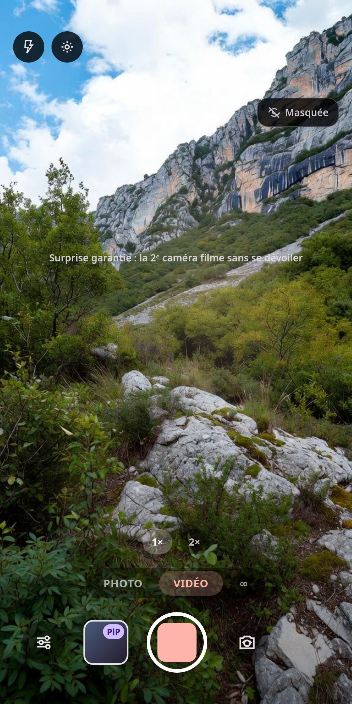

Double caméra : avant + arrière en une seule prise, fusion Picture-in-Picture. 100% gratuit, sans pub, sans filigrane — et entièrement sur votre appareil.
Une app double caméra pensée pour la spontanéité — et 100% gratuite.
Toutes les fonctions, gratuites à vie. Aucune pub, aucun filigrane, aucun abonnement, aucune inscription.
Capture l'avant et l'arrière en même temps — photo ou vidéo — depuis une seule session caméra.
Fusion composée sur l'appareil : Picture-in-Picture (vignette déplaçable & redimensionnable), côte à côte ou haut-bas.
Masquez l'aperçu de la 2ᵉ caméra : elle filme toujours, mais l'effet reste une surprise à la relecture.
Une boucle avant-arrière qui claque, en double caméra — exportée en MP4 ou en GIF, prête à partager.
Téléphone sans caméras simultanées ? TwinLens prend les deux photos l'une après l'autre et les fusionne automatiquement (photo double séquentielle).
Un voile « Ne bougez pas » pendant la prise réelle et un mode de capture rapide pour éviter le flou de bougé — avec retardateur 3 s / 10 s.
Zoom, mise au point tactile, flash & torche, qualité 4K, son d'obturateur désactivable, géolocalisation optionnelle, partage 1 tap, filigrane optionnel, modes de sauvegarde et galerie.
Prenez la photo (ou zoomez) avec les touches de volume — et déclenchez à distance avec une télécommande selfie Bluetooth.
Aucun compte, aucun serveur, aucune analyse. Vos médias restent dans votre galerie, un point c'est tout.
Interface Material 3 qui s'adapte aux couleurs de votre système (Android 12+).
Français, anglais, espagnol, allemand, portugais et italien — selon la langue du téléphone.
Un vrai rendu Picture-in-Picture, l'interface, les réglages complets et la galerie.



Tout ce qu'il faut savoir sur l'application double caméra TwinLens.
Ouvrez TwinLens, choisissez une mise en page (Picture-in-Picture, côte à côte ou haut-bas), puis appuyez sur le déclencheur : l'app capture l'avant et l'arrière simultanément dans une seule photo ou vidéo, fusionnées directement sur votre appareil.
Oui. TwinLens est 100% gratuit, sans publicité, sans filigrane, sans abonnement et sans inscription. Toutes les fonctions sont incluses.
La capture simultanée avant + arrière dépend du matériel (ISP) du téléphone. De nombreux appareils Android récents la prennent en charge ; sur les modèles qui ne le permettent pas, TwinLens prend les deux photos l'une après l'autre et les fusionne automatiquement (photo double séquentielle) — seule la vidéo simultanée reste indisponible. L'app inclut un diagnostic : touchez « Pourquoi ? » sur le bandeau, ou Réglages → Aide & diagnostic.
Oui, les deux. TwinLens capture des photos et des vidéos jusqu'en 4K en double caméra, avec zoom, mise au point tactile, flash, retardateur et déclencheur par touches de volume ou télécommande Bluetooth.
Oui. Tout se passe sur votre appareil : aucun compte, aucun serveur, aucune analyse. Vos médias sont enregistrés dans votre galerie et ne sont jamais envoyés en ligne. Voir la politique de confidentialité.